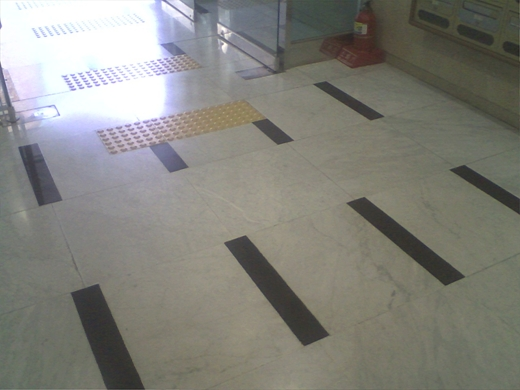

2007-06-18 10:58:23 선을 밟지 않습니까? [검은 판은 절대 밟으면 안될 것 같다]설문: 나는 보도블럭 이음면이나 각종 경계면을 밟지 않는다. (예/아니오)본인은> 예. 나는 각종 경계면 뿐만 아니라 각 건물 모서리의 연장선, 전신주나 가로등/가로수 사이의 가상의 이음선, 자동차 타이어 축의 연장선 등 가상의 연장선이나 이음선도 밟지 않는다. 특히 계단 블록의 이음선은 절대 밟지 않는다.